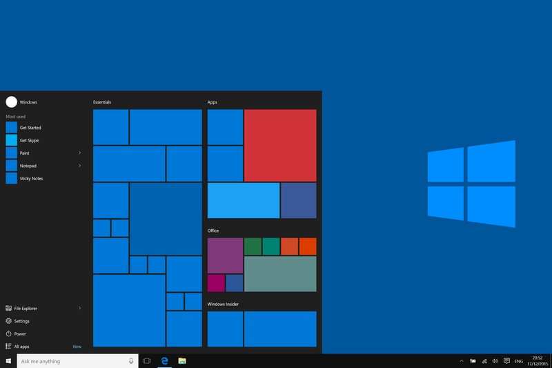
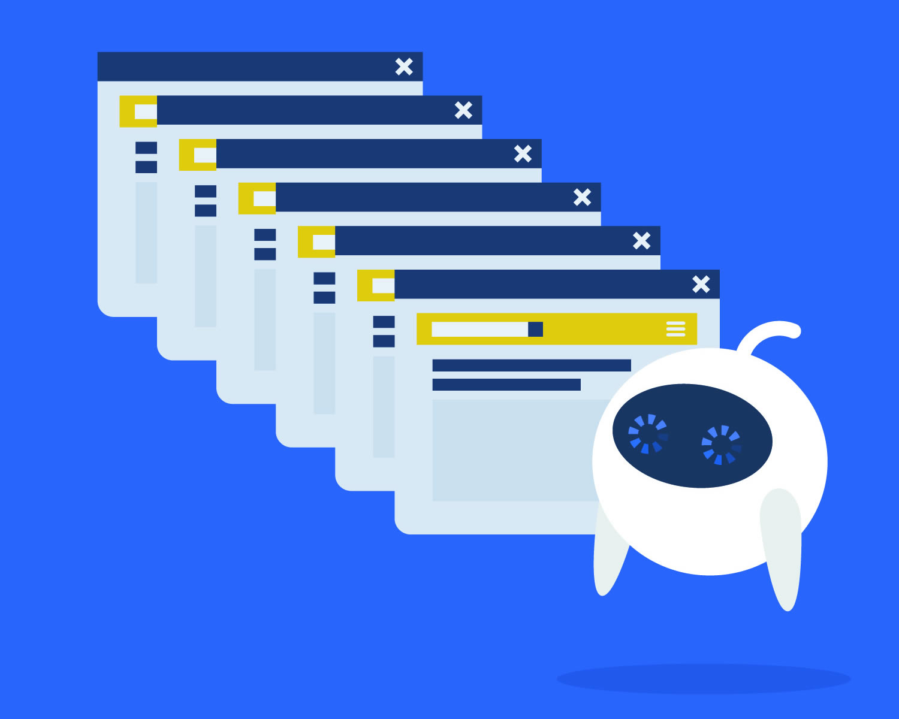
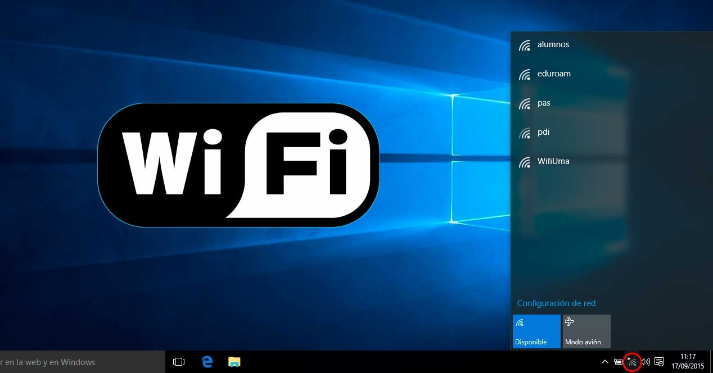
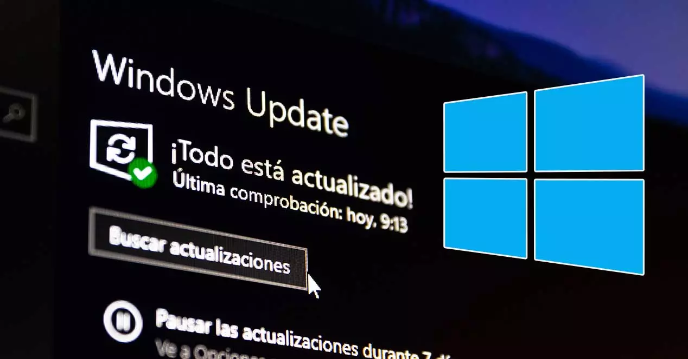
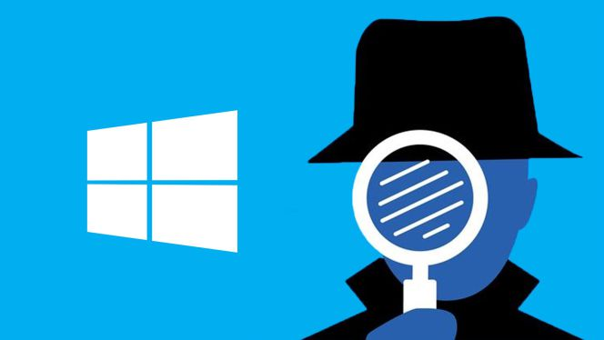
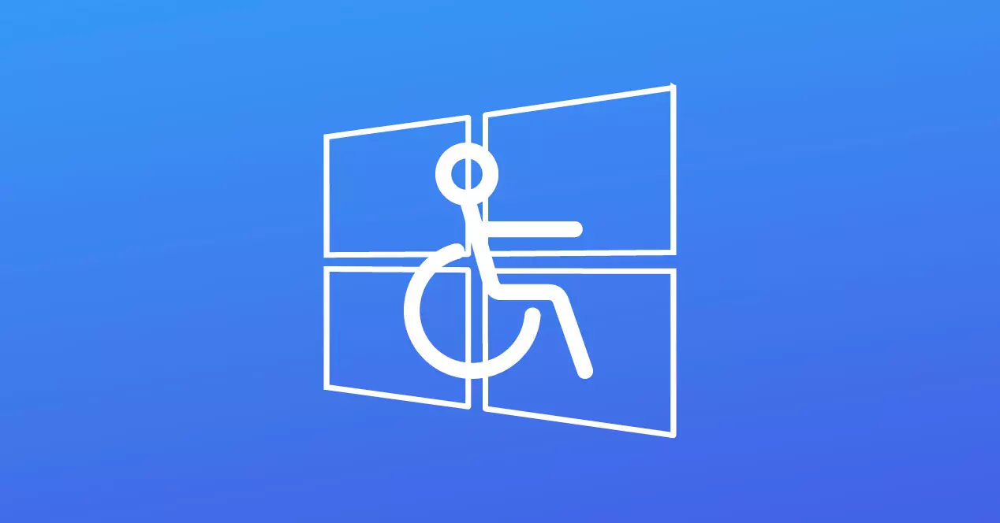

Caracteristicas de Windows
Windows es un sistema operativo desarrollado por Microsoft, que se ha convertido en una de las plataformas informáticas más utilizadas en el mundo. A lo largo de su evolución, Windows ha experimentado numerosas versiones y actualizaciones, cada una con sus propias características y mejoras.
Windows se caracteriza por su interfaz de usuario basada en ventanas, que hace que sea fácil de usar e intuitivo para los usuarios. A lo largo de los años, Windows ha evolucionado a través de varias versiones, incluyendo Windows 95, Windows XP, Windows 7, Windows 8 y Windows 10, cada una con su propio estilo de interfaz.

Windows es compatible con una amplia variedad de hardware, lo que significa que se ejecuta en una gran cantidad de dispositivos, desde computadoras de escritorio y portátiles hasta servidores y tabletas. Esto lo convierte en una opción versátil para diferentes necesidades.
Windows también ofrece una amplia gama de programas y herramientas diseñados para satisfacer diversas necesidades, desde el procesamiento de texto y la navegación web hasta el diseño gráfico y la programación, lo que lo convierte en un sistema operativo versátil para usuarios de diferentes perfiles.

Windows es compatible con una amplia gama de aplicaciones y software de terceros. Los usuarios pueden acceder a una gran variedad de programas, desde suites de oficina y herramientas de productividad hasta aplicaciones de diseño y entretenimiento.

Windows ofrece capacidades de red sólidas, lo que lo hace ideal para entornos empresariales. Los usuarios pueden conectarse a redes locales, redes inalámbricas, compartir archivos e imprimir en impresoras en red.

Microsoft proporciona actualizaciones periódicas de seguridad y características para Windows. Además, ofrece soporte técnico para ayudar a los usuarios a solucionar problemas y mantener sus sistemas actualizados.

Windows incorpora características de seguridad como Windows Defender (antivirus y antimalware) y Windows Firewall para proteger el sistema contra amenazas en línea. También ha introducido tecnologías como BitLocker para cifrar unidades de disco y garantizar la seguridad de los datos.

Windows incluye características de virtualización que permiten a los usuarios ejecutar múltiples sistemas operativos en una sola máquina a través de tecnologías como Hyper-V.

Windows se esfuerza por ser accesible para una amplia gama de usuarios, incluyendo aquellos con discapacidades. Ofrece características como narrador, teclado en pantalla y opciones de contraste de alto contraste.
